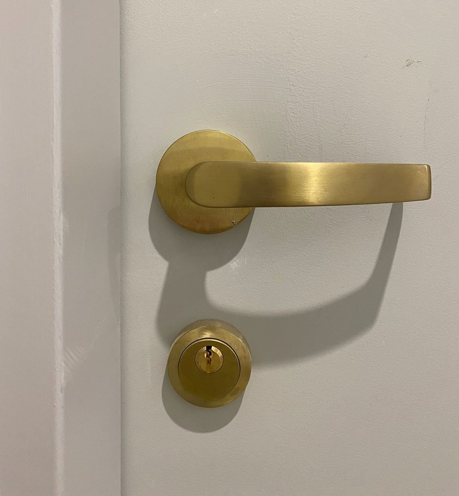
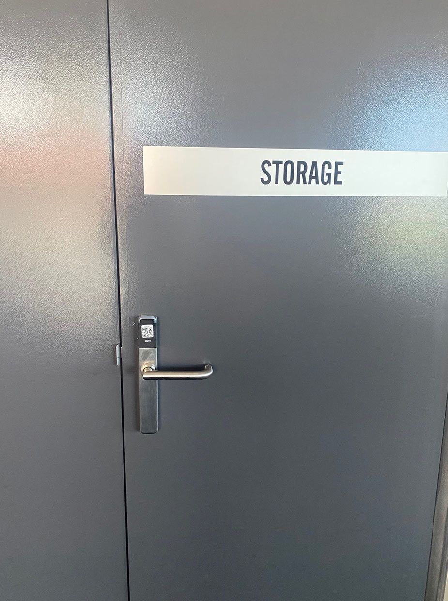
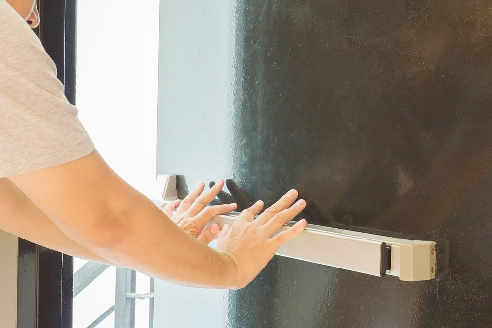
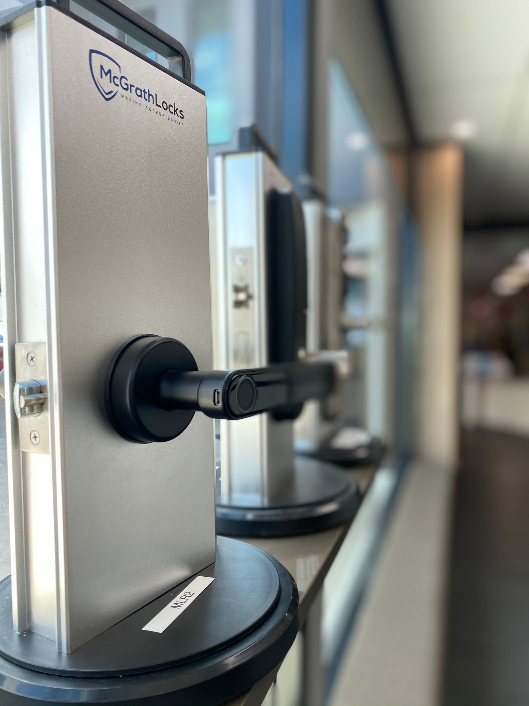

On this page
AT A GLANCE
Visit our Bundall location for both retail and trade services, and have a chat with our friendly team.
The biggest range from the world's biggest brands

Door Handle Levers
The Finishing Touches
SPL Security Solutions can help add the finishing touches to your new home or renovation.
Visit our Bundall location for both retail and trade services, and have a chat with our friendly team. We can guide you through product options, provide detailed information and catalogues, and arrange a personalised quote for your orders.
Door Seals
Keeping The Elements at Bay
Door seals serve many purposes other than just keeping the weather outside. They play an important part in the safety of commercial and residential buildings. SPL Security Solutions carry a large range of seals including environment seals, acoustic seals and fire and smoke seals.


Fire Door Hardware
Safety in an Emergency
Fast evacuation in the event of a fire requires industry standard fire door hardware. SPL Security Solutions supplies a range of fire door hardware to get you out fast and safe including door closers, handle sets and locksets for fire rated doors.
Door Closers
Automatically Safe and Secure
Door closers are a vital part of a commercial buildings safety requirements. The self closing function provides a consistent and convenient access solution in important areas of a building. SPL Security Solutions has a variety of door closers to suit most buildings needs.


Architectural Door Hardware
No matter what door you’re working on, we have the knobs, locks and other pieces for kitchens, bedrooms and your front door. This hardware looks attractive and is modern and sleek, while also offering the utmost in security for your home and every room in it. We want your space to be safe and secure so we’re here to help you find the ideal hardware to get the job done.
We proudly supply building and door hardware to schools, hospitals, luxury hotels, and the new construction projects shaping our communities. From durable fire-rated hardware to elegant architectural finishes, we deliver solutions that enhance both form and function.
Our streamlined process makes it easy: choose trusted brands like Dormakaba and Novus, let us calculate your hardware needs, and receive a customised quote. Once confirmed, we’ll package and deliver your order, with special options for custom products.
Call SPL Security Solutions for a quote on your door hardware needs today.